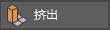
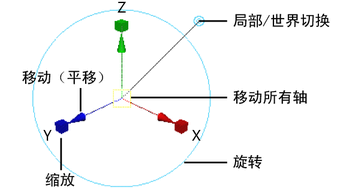

“挤出”(Extrude)命令
注： 仅当启用“构建历史”(Construction History)时，才显示此任务中使用的“显示操纵器工具”(Show Manipulator Tool)。
挤出多边形的面或边
- 选择要挤出的面或边。
- 执行下列操作之一：
- 激活“移动”(Move)、“旋转”(Rotate)或“缩放工具”(Scale Tool)，然后按 Shift 键并拖动操纵器（也称为智能挤出）。
- 选择“编辑网格 > 挤出”(Edit Mesh > Extrude)。
- 在建模工具包(Modeling Toolkit)中单击 。
- 按 Ctrl + E
此时将创建挤出节点。如果未使用快速挤出方法，则还会显示
“显示操纵器工具”(Show Manipulator Tool)和
“视图中编辑器”(In-View Editor)。

注： 顶点将沿其顶点法线挤出，从而为共享这些顶点的每个面创建其他面。
- 执行下列操作之一：
- 使用操纵器控制挤出的方向和距离
- 在视图中编辑器中调整属性
提示： 在
“视图中编辑器”(In-View Editor)显示并处于活动状态时，在标记菜单（Ctrl + Shift + 单击鼠标右键）中选择属性，以使选择成为
“视图中编辑器”(In-View Editor)中的活动属性。可以使用 Ctrl + Tab 键（从列表底部循环浏览到顶部）或 Ctrl + Shift + Tab 键（从列表顶部循环浏览到底部）循环浏览属性列表。
有关属性的详细信息，请参见挤出选项(Extrude Options)。
提示： 通过在通道盒中选择“编辑 > 设置 > 更改精度”(Edit > Settings > Change Precision)，可以设置“厚度”(Thickness)、“偏移”(Offset)和“分段”(Divisions)属性的精度。视图中编辑器使用与通道盒相同的精度设置。
- （可选）挤出边可以使网格成为非流形网格。使用网格 > 清理(Mesh > Cleanup)修复非流形几何体。